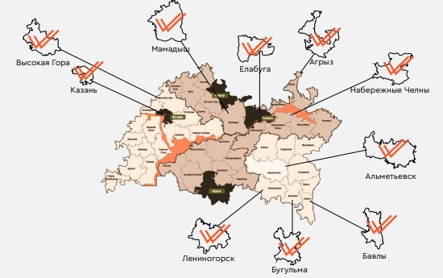

Инженерные изыскания и проектирование дорог
ООО «ГЛАВИНЖПРОЕКТ» — специализированная организация по инженерным изысканиям, дорожному проектированию и сопровождению строительства.
Геодезические изыскания
Геологические изыскания
Экологические изыскания
Гидрометеорологические изыскания
Археологические исследования
Экспертное сопровождение
Проектирование автомобильных дорог
